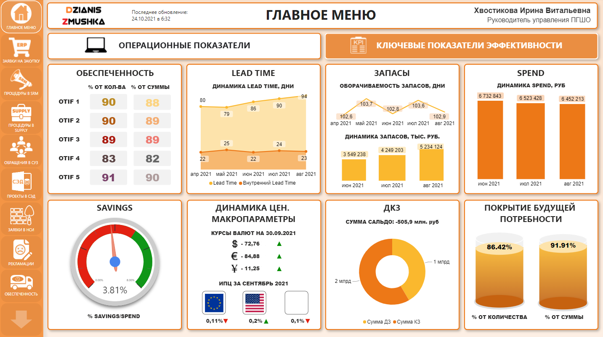
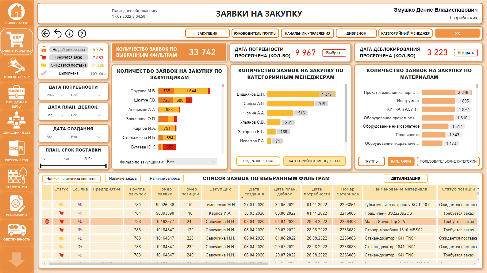
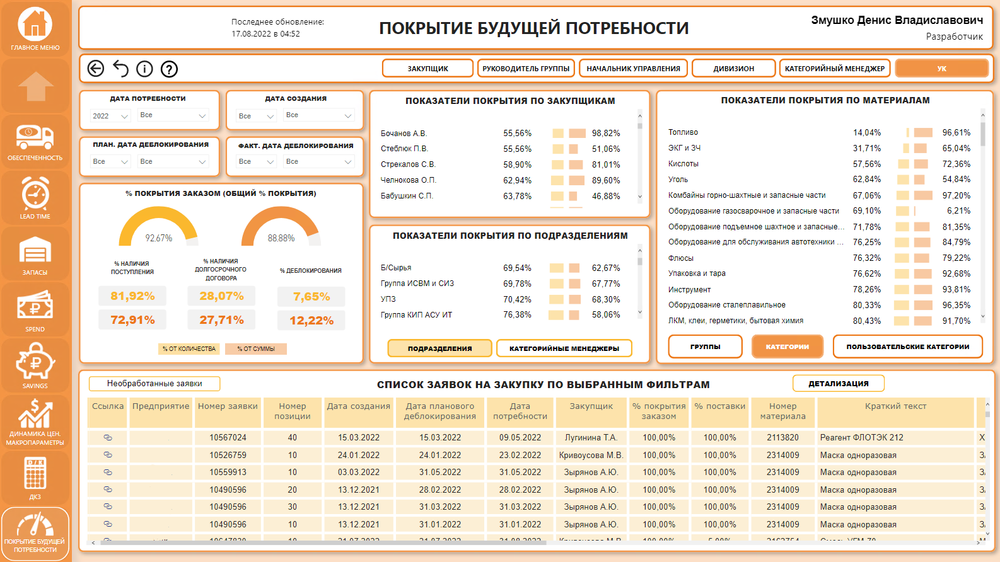

Purchaser's Desktop
The main object of the product is to create personalized dashboards in Power BI for the purchasing department with a role model. SAP systems, SQL databases, websites and 1C Bitrix were used as source systems. Analysis Services was used as OLAP, respectively, the type of connection was live connection. Data from SAP systems were extracted through SAP Business Warehouse (BW) sub-staging database, because it is easier to extract data to SQL from BW than, for example, from ERP, MDG, SRM, and from these systems it is not difficult to extract data into the BW.
For the purchasing department, 16 metrics were implemented for eight roles. A separate page was created for each role, as the customer asked to allow users to switch to higher roles. Additional requirements for the product were drill up/down/through, filter by the required attributes, open SAP documents and other weblinks through Power BI, show dynamical tooltips, refresh the cube once an hour and other requirements.
The main task of the product is to highlight problem areas for the user. The indicator lights up in red if there is an urgent need for user involvement.
The product implements such indicators as purchase requisitions, procedures in SRM, purchase of services, requests to the procurement management system, projects and contracts, claims (reclamations), receivables and payables, coverage of material requirements, price and volume dynamics, macro parameters, requests for the creation of nomenclature material numbers.
During implementing the project, a sufficient number of incorrect database maintenance was revealed, after which new projects followed. For example, there was no universal reference book of purchasers for all source systems before, where their hierarchy would be fixed, or in some source systems there were no user identifiers (only last names and first names were indicated).
About 120 dimensions and 150 measures were used in the process of implementing the product. The volume of dimensions is large, because it was necessary to create additional dimensions for each user role in order to implement personalized dashboards.